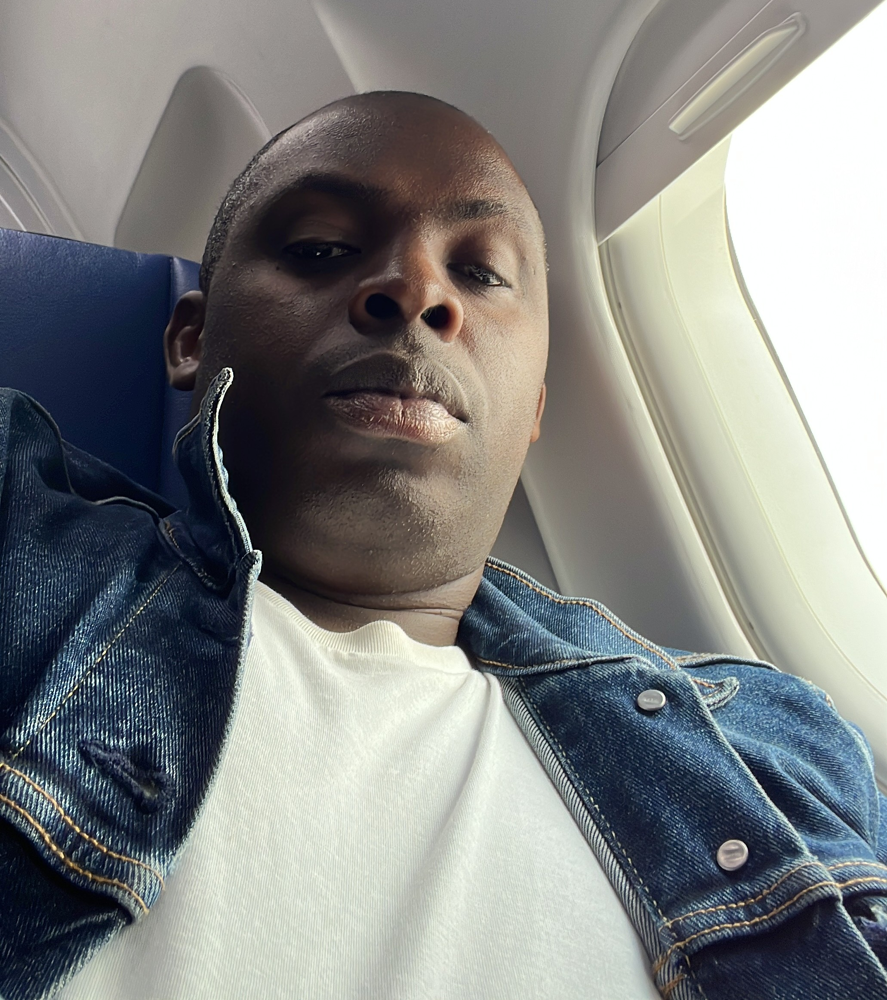

I am a
Looking for a position where my skills can be fully utilized. Clean, responsive, and ready for new opportunities and challenges.
"It always seems impossible, until it is done." — Nelson Mandela
SKILLS
Network Specialist & Software Developer
- Software Development (JavaScript, Node.js, Express, MongoDB)
- BSS/RAN (Radio – Transmission – Energies)
- Routing – Switching
- ABC of Project Management
- Electronics assembly and maintenance
Education
Telecommunication Engineer Diploma
Institut de technologies et specialites 2 plateauxHigh School Diploma
Korhogo modern high schoolEXPERIENCE
More than 10 years of experience in the tech and telecommunication industry.
Junior Software Developer
Kodan-Dev Company- Build servers, manage databases, and create secure APIs with Node.js.
- Engineered backend systems with Node.js and Express processing asynchronous CRUD transactions.
- Combine front-end and back-end skills, implementing user authentication and session management.
- Use React to build dynamic, single-page applications with reusable components.
Conference Infrastructure Specialist
African Development Bank Group- Managed technical infrastructure and logistics for board meetings and international conferences.
- Provided end-to-end support for high-stakes meetings, ensuring seamless execution.
- Collaborated with the IT department (CHIS) to maintain and optimize videoconferencing systems.
Freelance Telecommunication Engineer (BSS/RAN & TX)
Société de Télécommunications Africaine- Executed the SWAP of ORANGE-CI BTS sites from Alcatel to Nokia Flexi technology.
- Installed, configured, and commissioned AVIAT frequency hop equipment on transmission sites.
- Integrated and commissioned 2G/3G Huawei 3900 equipment for MTN-CI GSM sites.
- Managed microwave link swaps for MTN-CI from Harris Truepoint to AVIAT Eclipse.
RAN Engineer - BSS Head of Field Operations & Maintenance
Green Network Côte d'Ivoire- Supervised network deployment and maintenance, including site integration, commissioning, and frequency planning.
- Managed power systems (AC/DC), batteries, UPS, and ATS to ensure network stability.
- Coordinated subcontracting teams and supervised BSS field technicians.
- Served as OIC Head of BSS Service across multiple terms (2014–2016).
Freelance Telecommunication Consultant (RBS & Tx)
Aviat Networks- Deployed and commissioned radio, transmission, and energy equipment across various sites.
- Performed installation, integration, and troubleshooting for Ericsson 2G/3G BTS.
- Configured space diversity, traffic routing, and E1 transferring.